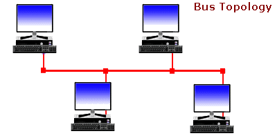

Una red en bus es aquella topología que se caracteriza por tener un único canal semidúplex de comunicaciones (denominado bus, troncal o backbone) al cual se conectan los diferentes dispositivos. De esta forma todos los dispositivos comparten el mismo canal.
La topología de bus es un diseño de red donde todos los dispositivos se conectan a un único cable principal (el "bus"). Los datos se transmiten por este cable a todos los nodos, y cada dispositivo los recibe y decide si son para él basándose en su dirección. Es económica y fácil de instalar, pero un fallo en el cable troncal puede desconectar toda la red, y el rendimiento disminuye cuantas más computadoras se conecta
La topología de bus se creó en los inicios de las redes, principalmente porque era simple, económica y fácil de configurar. Durante las décadas de 1980 y 1990, cuando las oficinas y las escuelas apenas comenzaban a conectar computadoras, la gente necesitaba una forma de compartir archivos e impresoras sin gastar una fortuna en cables y hardware. Se les ocurrió la idea de usar un cable principal que conectara todas las computadoras. Así fue como se creó la topología de bus en sus inicios. Funcionaba bien cuando las redes eran pequeñas y el tráfico era ligero. Con el tiempo, a medida que más dispositivos y una conexión a internet más rápida se hicieron comunes, la topología de bus comenzó a caer en desuso.
💡 Características principales